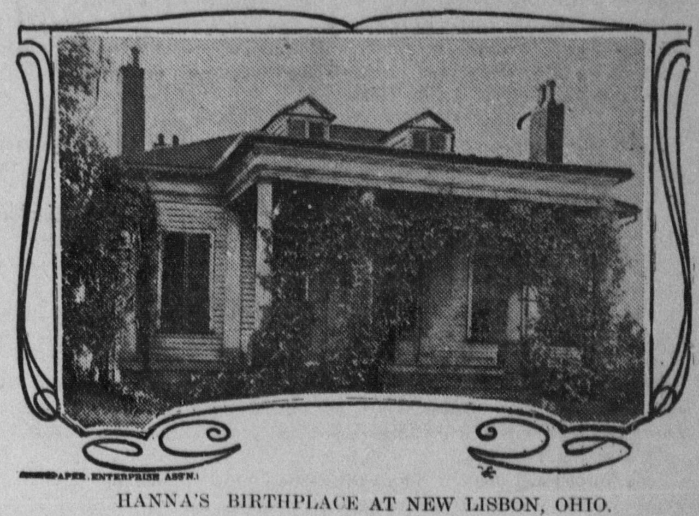
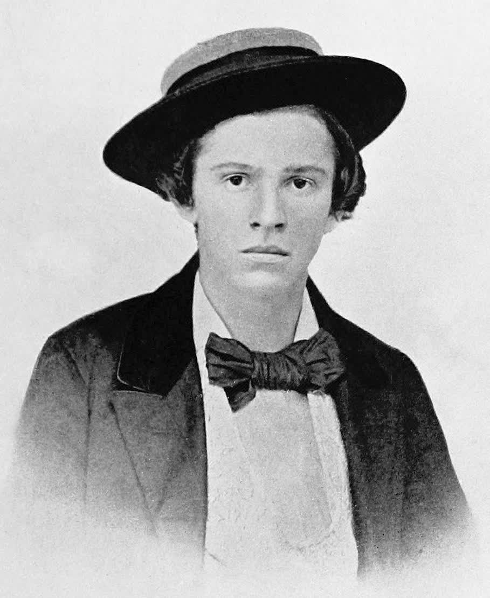
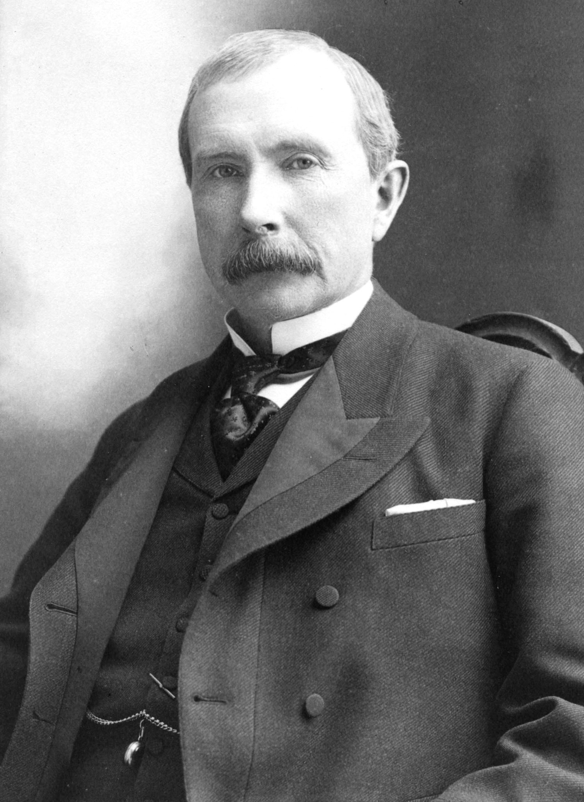
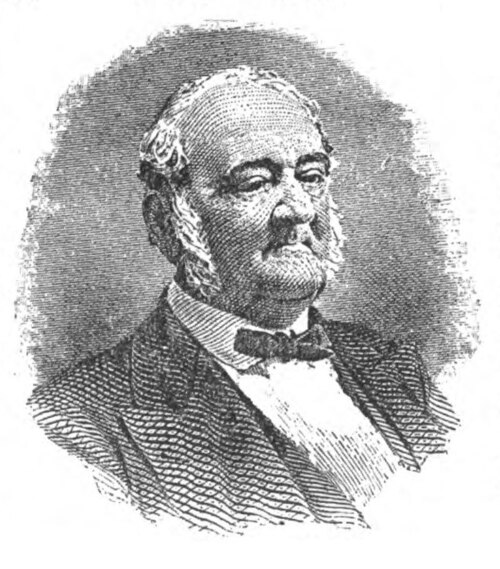

<template id="scene-02-who-was-template">
  <div
    data-composition-id="scene-02-who-was"
    data-width="1920"
    data-height="1080"
    style="position:absolute; top:0; left:0; width:1920px; height:1080px; overflow:hidden; background-color:#0E0B08;"
  >
    <style>
      @font-face {
        font-family: "Source Serif 4";
        src: url("../assets/fonts/SourceSerif4-Regular.woff2") format("woff2");
        font-weight: 400;
        font-style: normal;
      }
      @font-face {
        font-family: "Playfair Display";
        src: url("../assets/fonts/PlayfairDisplay-Bold.woff2") format("woff2");
        font-weight: 700;
        font-style: normal;
      }
      @font-face {
        font-family: "Playfair Display";
        src: url("../assets/fonts/PlayfairDisplay-Black.woff2") format("woff2");
        font-weight: 900;
        font-style: normal;
      }
      @font-face {
        font-family: "Roboto Mono";
        src: url("../assets/fonts/RobotoMono-Regular.woff2") format("woff2");
        font-weight: 400 700;
        font-style: normal;
      }
      .s2-stage {
        position: absolute;
        inset: 0;
        background-color: #0E0B08;
        font-family: "Source Serif 4", serif;
        color: #E8DEC8;
        overflow: hidden;
      }

      /* Chapter mark */
      #s2-chapter {
        position: absolute;
        top: 80px;
        left: 96px;
        font-family: "Roboto Mono", monospace;
        font-size: 22px;
        letter-spacing: 0.3em;
        text-transform: uppercase;
        color: #C87533;
        opacity: 0;
        z-index: 10;
        border-left: 2px solid #C87533;
        padding-left: 18px;
      }
      #s2-chapter .num {
        color: #9A8E76;
        margin-right: 14px;
      }

      /* Birthplace photograph */
      #s2-birthplace {
        position: absolute;
        top: 200px;
        left: 96px;
        width: 880px;
        height: 600px;
        object-fit: cover;
        border: 1px solid #C87533;
        opacity: 0;
        filter: sepia(0.35) contrast(1.05) brightness(0.85);
        box-shadow: 0 30px 80px rgba(0,0,0,0.6);
        z-index: 5;
      }

      /* Birthplace caption */
      #s2-birthplace-caption {
        position: absolute;
        top: 820px;
        left: 96px;
        width: 880px;
        font-family: "Roboto Mono", monospace;
        font-size: 24px;
        color: #9A8E76;
        letter-spacing: 0.05em;
        opacity: 0;
        z-index: 5;
      }

      /* Big text on right side: Born in a grocery */
      #s2-born-text {
        position: absolute;
        top: 240px;
        left: 1024px;
        width: 800px;
        z-index: 6;
      }
      #s2-born-text .lead {
        font-family: "Roboto Mono", monospace;
        font-size: 22px;
        letter-spacing: 0.2em;
        color: #9A8E76;
        text-transform: uppercase;
        margin-bottom: 28px;
        opacity: 0;
      }
      #s2-born-text .big {
        font-family: "Playfair Display", serif;
        font-weight: 900;
        font-size: 96px;
        line-height: 1.0;
        letter-spacing: -0.02em;
        color: #E8DEC8;
        margin-bottom: 38px;
      }
      #s2-born-text .big .word { display: inline-block; opacity: 0; transform: translateY(30px); }
      #s2-born-text .big .grocery { color: #C87533; font-style: italic; }
      #s2-born-text .meta {
        font-family: "Roboto Mono", monospace;
        font-size: 36px;
        font-weight: 500;
        color: #C87533;
        letter-spacing: 0.05em;
        opacity: 0;
        margin-top: 32px;
        font-variant-numeric: tabular-nums;
      }
      #s2-born-text .meta .city { color: #E8DEC8; margin-right: 24px; }

      /* The Rockefeller card — split frame */
      #s2-rockefeller-stage {
        position: absolute;
        inset: 0;
        z-index: 8;
        opacity: 0;
        display: grid;
        grid-template-columns: 1fr 1fr;
      }
      .s2-rk-side {
        position: relative;
        height: 100%;
        overflow: hidden;
      }
      .s2-rk-side img {
        position: absolute;
        inset: 0;
        width: 100%;
        height: 100%;
        object-fit: cover;
        filter: sepia(0.4) contrast(1.1) brightness(0.78);
      }
      .s2-rk-side .overlay {
        position: absolute;
        bottom: 130px;
        left: 0; right: 0;
        padding: 56px 80px 32px;
        background: linear-gradient(to top, rgba(14,11,8,0.95) 0%, rgba(14,11,8,0.7) 60%, rgba(14,11,8,0) 100%);
      }
      .s2-rk-side .label {
        font-family: "Roboto Mono", monospace;
        font-size: 24px;
        letter-spacing: 0.3em;
        text-transform: uppercase;
        color: #9A8E76;
        margin-bottom: 16px;
      }
      .s2-rk-side .name {
        font-family: "Playfair Display", serif;
        font-weight: 900;
        font-size: 56px;
        line-height: 1.05;
        color: #E8DEC8;
        margin-bottom: 14px;
        letter-spacing: -0.02em;
      }
      .s2-rk-side .stat {
        font-family: "Source Serif 4", serif;
        font-style: italic;
        font-size: 28px;
        color: #C87533;
        line-height: 1.3;
      }
      .s2-rk-side.left .name { color: #E8DEC8; }
      .s2-rk-side.right .name { color: #C87533; }

      /* The connector text between */
      #s2-rk-link {
        position: absolute;
        top: 50%;
        left: 50%;
        transform: translate(-50%, -50%);
        z-index: 9;
        text-align: center;
        opacity: 0;
        background: rgba(14,11,8,0.92);
        border: 1px solid #C87533;
        padding: 32px 56px;
        max-width: 700px;
      }
      #s2-rk-link .label {
        font-family: "Roboto Mono", monospace;
        font-size: 24px;
        letter-spacing: 0.3em;
        text-transform: uppercase;
        color: #9A8E76;
        margin-bottom: 12px;
      }
      #s2-rk-link .text {
        font-family: "Playfair Display", serif;
        font-style: italic;
        font-size: 36px;
        line-height: 1.25;
        color: #E8DEC8;
      }
      #s2-rk-link .text .accent { color: #C87533; }

      /* The "price of things" insight slate */
      #s2-insight {
        position: absolute;
        inset: 0;
        z-index: 12;
        opacity: 0;
        display: flex;
        align-items: center;
        justify-content: center;
        background-color: #0E0B08;
      }
      #s2-insight .frame {
        max-width: 1400px;
        padding: 0 96px;
        text-align: center;
      }
      #s2-insight .pre {
        font-family: "Roboto Mono", monospace;
        font-size: 24px;
        letter-spacing: 0.3em;
        text-transform: uppercase;
        color: #9A8E76;
        margin-bottom: 38px;
      }
      #s2-insight .quote {
        font-family: "Playfair Display", serif;
        font-weight: 700;
        font-size: 96px;
        line-height: 1.1;
        letter-spacing: -0.02em;
        color: #E8DEC8;
      }
      #s2-insight .quote .accent {
        color: #C87533;
        font-style: italic;
      }
      #s2-insight .attrib {
        margin-top: 56px;
        font-family: "Roboto Mono", monospace;
        font-size: 24px;
        letter-spacing: 0.2em;
        text-transform: uppercase;
        color: #9A8E76;
      }

      /* The path to coal & iron — final scene */
      #s2-path {
        position: absolute;
        inset: 0;
        z-index: 14;
        opacity: 0;
        background-color: #0E0B08;
      }
      #s2-path .grid {
        position: absolute;
        inset: 0;
        display: grid;
        grid-template-columns: 1fr 1fr;
        align-items: stretch;
      }
      #s2-path .pic-side {
        position: relative;
        overflow: hidden;
      }
      #s2-path .pic-side img {
        position: absolute;
        inset: 0;
        width: 100%;
        height: 100%;
        object-fit: cover;
        filter: sepia(0.35) contrast(1.05) brightness(0.82);
        will-change: transform;
      }
      #s2-path .pic-side .cap {
        position: absolute;
        bottom: 32px;
        left: 32px;
        font-family: "Roboto Mono", monospace;
        font-size: 24px;
        color: #E8DEC8;
        letter-spacing: 0.1em;
        background: rgba(14,11,8,0.85);
        padding: 10px 14px;
        border-left: 2px solid #C87533;
      }
      #s2-path .text-side {
        padding: 120px 96px;
        display: flex;
        flex-direction: column;
        justify-content: center;
        gap: 32px;
      }
      #s2-path .label {
        font-family: "Roboto Mono", monospace;
        font-size: 22px;
        letter-spacing: 0.3em;
        text-transform: uppercase;
        color: #9A8E76;
      }
      #s2-path .who {
        font-family: "Playfair Display", serif;
        font-weight: 900;
        font-size: 96px;
        line-height: 1.05;
        letter-spacing: -0.02em;
        color: #E8DEC8;
      }
      #s2-path .who .last { color: #C87533; }
      #s2-path .biz {
        font-family: "Roboto Mono", monospace;
        font-size: 36px;
        letter-spacing: 0.15em;
        text-transform: uppercase;
        color: #C87533;
      }
      #s2-path .closer {
        font-family: "Playfair Display", serif;
        font-style: italic;
        font-size: 42px;
        line-height: 1.3;
        color: #E8DEC8;
        margin-top: 24px;
      }
      #s2-path .closer .accent { color: #C03A2C; font-weight: 900; font-style: normal; }
    </style>

    <div class="s2-stage">
      <!-- Chapter mark -->
      <div id="s2-chapter"><span class="num">II</span>The Grocer's Son</div>

      <!-- Birthplace photo (left) -->
      
      <div id="s2-birthplace-caption">HANNA BIRTHPLACE · NEW LISBON, OHIO · CIRCA 1837</div>

      <!-- Right text -->
      <div id="s2-born-text">
        <div class="lead">Not Born With Money</div>
        <div class="big">
          <span class="word">Born&nbsp;</span><span class="word">in&nbsp;</span><span class="word">a&nbsp;</span><span class="word grocery">grocery.</span>
        </div>
        <div class="meta">
          <span class="city">NEW&nbsp;LISBON,&nbsp;OHIO</span>·&nbsp;1837
        </div>
      </div>

      <!-- Rockefeller split-frame -->
      <div id="s2-rockefeller-stage">
        <div class="s2-rk-side left">
          
          <div class="overlay">
            <div class="label">Western Reserve College, Class of 1858</div>
            <div class="name">Marcus A. Hanna</div>
            <div class="stat">Dropped out after one year.</div>
          </div>
        </div>
        <div class="s2-rk-side right">
          
          <div class="overlay">
            <div class="label">Same College, Same Class</div>
            <div class="name">John D. Rockefeller</div>
            <div class="stat">90% of all U.S. oil refining.</div>
          </div>
        </div>
      </div>

      <div id="s2-rk-link">
        <div class="label">A footnote of history</div>
        <div class="text">The two would <span class="accent">orbit each other</span> for the next forty years.</div>
      </div>

      <!-- The price of things -->
      <div id="s2-insight">
        <div class="frame">
          <div class="pre">What he learned</div>
          <div class="quote">The real education<br/>was in the <span class="accent">price of things.</span></div>
          <div class="attrib">— Hanna's working principle, age 19</div>
        </div>
      </div>

      <!-- The path: marriage to Daniel Rhodes -->
      <div id="s2-path">
        <div class="grid">
          <div class="pic-side" data-layout-allow-overflow>
            
            <div class="cap">DANIEL RHODES · CLEVELAND</div>
          </div>
          <div class="text-side">
            <div class="label">The Marriage That Changed Everything</div>
            <div class="who">Daniel <span class="last">Rhodes.</span></div>
            <div class="biz">Coal&nbsp;·&nbsp;Iron&nbsp;·&nbsp;Cleveland</div>
            <div class="closer">Hanna walked into that business<br/><span class="accent">and never walked out.</span></div>
          </div>
        </div>
      </div>
    </div>

    <script>
      window.__timelines = window.__timelines || {};
      const tl = gsap.timeline({ paused: true });

      // BEAT MAP (relative to scene-02 start at root t=60s)
      // 0     "He wasn't born with money"
      // 1.4   "born in a grocery"  -> "grocery" word lights amber
      // 3.0   "New Lisbon, Ohio. 1837"
      // 5     "his father Doctor Leonard"
      // 17    "moved to Cleveland"
      // 19.8  "Western Reserve College"
      // 21.8  "In his class" -> Rockefeller split appears
      // 30.7  "John D. Rockefeller" (name lands)
      // 33.2  "orbit each other for the next forty years"
      // 35.7  "Hanna lasted one year"
      // 46.1  "the price of things"
      // 50.5  "Watched how men negotiated"
      // 58.9  "Civil War came"
      // 63.8  "Charlotte Rhodes"
      // 66.1  "Daniel Rhodes"
      // 67.3  "coal, iron"
      // 74.1  "never walked out"

      // Phase 1: Chapter + birthplace + "Born in a grocery" (0 → 17)
      tl.fromTo("#s2-chapter",
        { opacity: 0, x: -30 },
        { opacity: 1, x: 0, duration: 0.8, ease: "power3.out" },
        0.26
      );

      tl.fromTo("#s2-birthplace",
        { opacity: 0, scale: 1.05 },
        { opacity: 0.95, scale: 1.0, duration: 1.2, ease: "power3.out" },
        0.43
      );
      tl.to("#s2-birthplace", { scale: 1.06, duration: 15, ease: "none", overwrite: "auto" }, 1.453);
      tl.fromTo("#s2-birthplace-caption",
        { opacity: 0, y: 10 },
        { opacity: 1, y: 0, duration: 0.8, ease: "power3.out" },
        1.007
      );

      // "Not Born With Money" lead — appears with "He wasn't born with money"
      tl.fromTo("#s2-born-text .lead",
        { opacity: 0, x: 20 },
        { opacity: 1, x: 0, duration: 0.7, ease: "power3.out" },
        0.6
      );

      // "Born in a grocery" word-by-word stagger, lands on "grocery" at 1.4s
      tl.to("#s2-born-text .big .word", {
        opacity: 1, y: 0, duration: 0.5, ease: "power3.out", stagger: 0.18
      }, 0.83);

      // City+year on "New Lisbon, Ohio. 1837" (~3s)
      tl.fromTo("#s2-born-text .meta",
        { opacity: 0, y: 20 },
        { opacity: 1, y: 0, duration: 0.8, ease: "power3.out" },
        2.179
      );

      // Phase 2: Hide birthplace+text (16 → 17.5), prep for Rockefeller
      tl.to(["#s2-birthplace", "#s2-birthplace-caption", "#s2-born-text"], {
        opacity: 0, duration: 0.7, ease: "power2.in"
      }, 14.01);
      tl.set(["#s2-birthplace", "#s2-birthplace-caption", "#s2-born-text"], { visibility: "hidden" }, 14.708);

      // Phase 3: Rockefeller split-frame on "In his class" (21.8s)
      tl.set("#s2-rockefeller-stage", { opacity: 1 }, 16.19);
      tl.fromTo(".s2-rk-side.left img",
        { scale: 1.08, x: -20 },
        { scale: 1.0, x: 0, duration: 1.2, ease: "power3.out" },
        16.63
      );
      tl.fromTo(".s2-rk-side.left .overlay",
        { opacity: 0, y: 30 },
        { opacity: 1, y: 0, duration: 0.8, ease: "power3.out" },
        17.096
      );

      // Right side reveals on "his class was a quiet awkward boy..."
      tl.fromTo(".s2-rk-side.right img",
        { scale: 1.08, x: 20 },
        { scale: 1.0, x: 0, duration: 1.2, ease: "power3.out" },
        22.219
      );
      tl.fromTo(".s2-rk-side.right .overlay",
        { opacity: 0, y: 30 },
        { opacity: 1, y: 0, duration: 0.8, ease: "power3.out" },
        25.504
      );

      // Slow ken-burns on both
      tl.to(".s2-rk-side.left img", { scale: 1.06, duration: 12, ease: "none", overwrite: "auto" }, 17.74);
      tl.to(".s2-rk-side.right img", { scale: 1.06, duration: 8, ease: "none", overwrite: "auto" }, 23.326);

      // Link card on "orbit each other" (33s)
      tl.fromTo("#s2-rk-link",
        { opacity: 0, scale: 0.95 },
        { opacity: 1, scale: 1, duration: 0.8, ease: "power3.out" },
        28.756
      );

      // Phase 4: Hide Rockefeller (35.5 → 36.5), insight reveals
      tl.to(["#s2-rockefeller-stage", "#s2-rk-link"], {
        opacity: 0, duration: 0.7, ease: "power2.in"
      }, 31.74);
      tl.set(["#s2-rockefeller-stage", "#s2-rk-link"], { visibility: "hidden" }, 32.41);

      // Insight: "The real education was in the price of things" — lands on 46.1
      tl.set("#s2-insight", { opacity: 1 }, 32.5);
      tl.fromTo("#s2-insight .pre",
        { opacity: 0, y: 20 },
        { opacity: 1, y: 0, duration: 0.7, ease: "power3.out" },
        32.59
      );
      tl.fromTo("#s2-insight .quote",
        { opacity: 0, y: 30, letterSpacing: "0.02em" },
        { opacity: 1, y: 0, letterSpacing: "-0.02em", duration: 1.2, ease: "power3.out" },
        33.052
      );
      tl.to("#s2-insight .quote .accent", {
        color: "#C03A2C", duration: 0.4, ease: "power2.inOut"
      }, 40.57);
      tl.fromTo("#s2-insight .attrib",
        { opacity: 0 },
        { opacity: 1, duration: 0.8, ease: "power2.out" },
        41.79
      );

      // Phase 5: hide insight, show path (60 → 76)
      tl.to("#s2-insight", { opacity: 0, duration: 0.7, ease: "power2.in" }, 52.71);
      tl.set("#s2-insight", { visibility: "hidden" }, 53.41);

      tl.set("#s2-path", { opacity: 1 }, 53.5);
      tl.fromTo("#s2-path .pic-side img",
        { scale: 1.1, x: -20 },
        { scale: 1.0, x: 0, duration: 1.2, ease: "power3.out" },
        53.58
      );
      tl.fromTo("#s2-path .cap",
        { opacity: 0, y: 10 },
        { opacity: 1, y: 0, duration: 0.7, ease: "power3.out" },
        54.474
      );

      // Text reveals
      tl.fromTo("#s2-path .label",
        { opacity: 0, x: 20 },
        { opacity: 1, x: 0, duration: 0.6, ease: "power3.out" },
        54.026
      );
      // "Daniel Rhodes" lands on 66.1
      tl.fromTo("#s2-path .who",
        { opacity: 0, y: 30 },
        { opacity: 1, y: 0, duration: 0.9, ease: "power3.out" },
        57.646
      );
      // "Coal, iron" lands on 67.3
      tl.fromTo("#s2-path .biz",
        { opacity: 0, letterSpacing: "0.4em" },
        { opacity: 1, letterSpacing: "0.15em", duration: 1.0, ease: "power3.out" },
        58.911
      );
      // closer lands on "never walked out" 74.1
      tl.fromTo("#s2-path .closer",
        { opacity: 0, y: 20 },
        { opacity: 1, y: 0, duration: 0.9, ease: "power3.out" },
        60.841
      );
      tl.to("#s2-path .closer .accent", {
        scale: 1.06, duration: 0.5, ease: "power2.out"
      }, 64.814);

      // Slow ken burns on the daniel rhodes photo
      tl.to("#s2-path .pic-side img", { scale: 1.05, duration: 13, ease: "none", overwrite: "auto" }, 54.651);

      window.__timelines["scene-02-who-was"] = tl;
    </script>
  </div>
</template>
